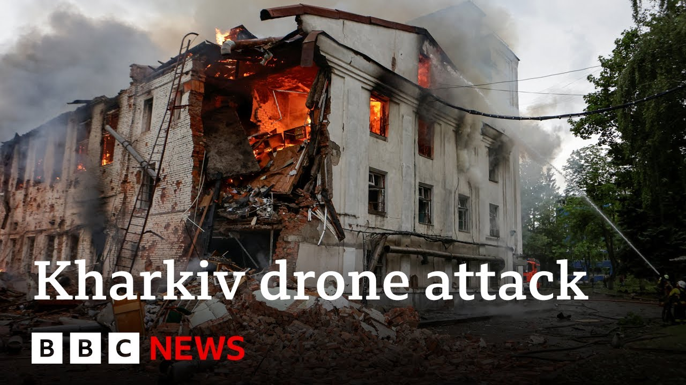

【俄罗斯对乌克兰发动开战以来最大规模无人机袭击 | BBC新闻】
Summary: Russia launched a major missile attack on Kharkiv, killing at least three people in the largest assault since the full-scale invasion began, with residential buildings hit and children among the injured.
摘要： 俄罗斯对哈尔科夫发动大规模导弹袭击，造成至少3人死亡，这是全面入侵以来最严重的袭击，居民楼被击中，儿童受伤。

⏱️ Estimated Reading Time: 9 min
📚 六级生词 📚 雅思生词 📚 托福生词 📚 GRE生词 📚 视频里的生词
Russia has launched a major missile attack on Ukraine's second largest city with at least three people reported killed.
俄罗斯对乌克兰第二大城市发动大规模导弹袭击，据报道至少3人死亡。
The mayor of Kharkiv says it's the biggest attack on the city since the start of Russia's full-scale invasion.
哈尔科夫市长称这是俄罗斯全面入侵以来对该市最大规模的袭击。
He said dozens of explosions had been reported.
他表示已报告数十起爆炸。
Another official said emergency crews were searching for victims trapped in the rubble.
另一名官员称救援人员正在废墟中搜寻被困者。
He said a residential building had been hit.
他表示一栋居民楼被击中。
Two children, including a young baby, were among those injured.
伤者中包含两名儿童，其中一名是婴儿。
It's the second big attack on Kharkiv in the past few days.
这是过去几天内哈尔科夫遭遇的第二次大规模袭击。
It comes as President Trump said Ukraine gave Putin a reason to go in and bomb the hell out of them after Sunday's massive attack on air bases deep inside Russian territory.
此前特朗普总统称乌克兰给了普京理由发动袭击，因周日乌方对俄境内空军基地的大规模攻击。
Well, they gave Putin a reason to go and it bombed the hell out of him last night.
他们给了普京理由，昨晚俄方就猛烈轰炸了他们。
That's something I didn't like about it.
这是我不认同的地方。
When I saw it, I said, "Here we go. Now it's going to be a strike."
我看到时就说"开始了，马上会有报复性打击"。
Well, let's go live now to Kiev and speak to our correspondents there, Paul Adams.
现在连线基辅的记者保罗·亚当斯。
Paul, what do you make of what the mayor of Kharkiv had to say, saying that this is the most powerful attack on the region since the start of the full-scale invasion?
保罗，哈尔科夫市长称这是全面入侵以来最猛烈的袭击，你如何评价？
How fair an assessment is that?
这个说法准确吗？
Well, it's not the most deadly.
这不是死亡人数最多的一次。
There have been other attacks on Kharkiv that have killed more civilians, but it does seem to have been one of the most intense.
哈尔科夫发生过更致命的袭击，但这次确实是最猛烈的之一。
Our understanding is that this all took place within the space of about 90 minutes in the hours before dawn.
据我们了解，袭击集中在黎明前约90分钟内。
And with reports of around 40 explosions including drones, glide bombs that the Russians use particularly in areas closer to the front lines and also at least one ballistic missile.
据报约有40次爆炸，包括无人机、滑翔炸弹（俄军常用于前线区域）和至少一枚弹道导弹。
So for that period of time that was clearly a very very intense and terrifying experience for the people of Kharkiv.
对哈尔科夫市民来说这显然是极其密集恐怖的经历。
And the pictures that we have seen this morning of apartment blocks and private buildings on fire give you some sense of how grim it must have felt.
今晨看到的公寓楼和私人建筑起火画面可见当时的惨烈。
We heard there President Trump saying Ukraine gave President Putin a reason to go in and bomb the hell out of them following that spider web attack on Russia.
我们听到特朗普称乌克兰的"蜘蛛网"袭击给了普京轰炸理由。
How are those comments being received in Kiev there?
基辅方面如何回应这些言论？
You know, Ukrainians are extremely weary of hearing this kind of language that somehow things that they do to attack Russia trigger retaliation.
乌克兰人已厌倦"乌方行动招致报复"这类说辞。
I mean, after all, the night before Operation Spider, Russia launched 472 drones over Ukraine.
毕竟"蜘蛛行动"前夜，俄军向乌克兰发射了472架无人机。
You know, this has been going on for more than three years.
这场战争已持续三年多。
What on earth does Donald Trump think that Ukraine has been experiencing night after night for all of this time?
特朗普难道不知道乌克兰夜夜经历的苦难吗？
I think it's clear that when he spoke to Vladimir Putin just a few days ago, the President Putin bent his ear probably about Operation Spider, which was clearly a massive humiliation for the Russian air force.
显然他几天前与普京通话时，对方必然提及让俄空军蒙羞的"蜘蛛行动"。
But also about an alleged attack on a passenger train inside Russia, a train that was heading in the direction of Moscow that crashed into a bridge that had been blown up, killing seven civilians.
还有俄境内一列开往莫斯科的客运列车撞上被炸桥梁致7名平民死亡的事件。
The Russians say that that was an act of terrorism by Ukraine.
俄方称这是乌克兰的恐怖行为。
They have yet to provide any evidence for that, but clearly that's what one of the things that President Putin was telling Donald Trump about.
虽未提供证据，但这显然是普京告知特朗普的内容之一。
Paul, thank you.
谢谢保罗。
That's the BBC's Paul Adams in Kiev there.
这里是BBC驻基辅记者保罗·亚当斯。
Well, let's bring in Mykola Biliskov, who's a research fellow at Ukraine's National Institute for Strategic Studies.
现在有请乌克兰国防政策下属国家战略研究所研究员米科拉·比利斯科夫。
He's in Kiev as well.
他同样在基辅。
Thank you for joining us on BBC News.
感谢接受BBC采访。
So, we've seen two days of major Russian strikes on Ukraine.
我们目睹俄军连续两天大规模袭击乌克兰。
Is this Russia's retaliation for that spider web attack on its territory?
这是对"蜘蛛网"袭击的报复吗？
Well, the way people are putting it as for me is a justification for the Russian acts.
这种说法只是为俄方行为找借口。
There is a saying in Ukraine that demonstrates the absurdity of this justification that says that if Ukraine stopped fighting there would be no Ukraine and if Russia stop fighting there would be no war.
乌克兰有句谚语揭示这种辩解的荒谬："若乌方停战则乌克兰灭亡，若俄方停战则战争结束"。
So we target everything that is used to terrorize Ukrainian cities, Ukrainian infrastructure and it is within the right of self-defense.
我们打击所有用于恐吓乌克兰城市和基础设施的目标，这是正当防卫权。
So in that regard, what do you make of President Trump's comments that Ukraine had given President Putin a reason to go ahead and bomb the hell out of them?
你如何看待特朗普称乌克兰给了普京轰炸理由的言论？
And what does that mean in terms of Kiev's relationship with Washington DC?
这对基辅与华盛顿的关系意味着什么？
Well, that's incredible and that's a major frustration to equate the aggressor and the countries that suffer from aggression.
将侵略者与受害国相提并论令人震惊沮丧。
Again, we exercising the right of self-defense.
我们是在行使自卫权。
It is the 51st article of a UN charter.
这符合联合国宪章第51条。
And when someone even if it's US president as he think himself as a mediator put it in such a way unfortunately he is not creating conditions for the peace.
当有人——即便是自居调停者的美国总统——如此表态时，他并未创造和平条件。
And for sure it's not good for US Ukrainian relations which we value.
这无疑损害了我们珍视的美乌关系。
So that's incredible and frustration.
这令人难以置信且沮丧。
And what do you make of these missile attacks is there a strategic value to them in terms of what's happening on the ground in the war because we keep hearing about a Russian summer offensive.
这些导弹袭击对当前战局有战略价值吗？我们不断听闻俄军夏季攻势。
What's happening on the front lines at the moment?
前线现状如何？
Well, these are two separate acts.
这是两个独立层面。
They exist in a parallel.
它们并行存在。
So, Russia is waging so-called total war.
俄方正在发动所谓"总体战"。
With total war, you deliberately target civilians, civilian infrastructure, rare areas to undermine the moral, to make life untenable, maybe to create the situation when Ukrainian citizens would pressure Ukrainian government to negotiate on Russian terms.
通过袭击平民、基础设施和后方来瓦解士气，制造生存危机，迫使民众施压政府接受俄方条件。
But it has nothing to do with the front line.
但这与前线无关。
And within the front line Russians trying to advance and we try to arrest them.
前线俄军试图推进，我们则阻止他们。
And these are just two parallel stories and Russian attacks against civilians.
袭击平民与前线的战事是两条平行线。
It's part of the total war approach that thus far is not delivering to them.
这种总体战策略至今未达目的。
But unfortunately Russians still don't come to the conclusion that it's futile to do this total war.
遗憾的是俄方仍未认识到总体战的徒劳。
And we continue to see images coming in from Ukraine and we hear reports of civilians having to take cover.
我们持续看到乌克兰民众躲避袭击的画面和报道。
When you have these constant missile attacks and of course those alerts for Ukrainians to really go into bunkers how does it affect the life of civilians in the country?
持续袭击和防空警报如何影响平民生活？
Again that's a part of Russian approach to make life unbearable.
这正是俄方制造生存危机的策略。
You know sleep deprivation it's a major problem and it has a cumulative effect when you do not sleep enough your cognitive and physical abilities decline.
睡眠剥夺会累积影响认知和体能。
And again it's very vicious intent of the Russians to undermine Ukrainian moral, but thus far it proved to be counterproductive.
俄方企图瓦解士气的恶毒意图适得其反。
Thank you very much.
非常感谢。
That's Mykola Biliskov there from Ukraine's National Institute for Strategic Studies.
这里是乌克兰国家战略研究所的米科拉·比利斯科夫。
Thank you.
谢谢。